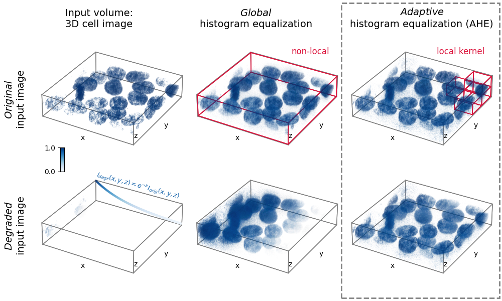

Note
Go to the end to download the full example code. or to run this example in your browser via Binder
3D adaptive histogram equalization#
Adaptive histogram equalization (AHE) can be used to improve the local contrast of an image [1]. Specifically, AHE can be useful for normalizing intensities across images. This example compares the results of applying global histogram equalization and AHE to a 3D image and a synthetically degraded version of it.
import matplotlib.pyplot as plt
import matplotlib.patches as patches
from matplotlib import cm, colors
from mpl_toolkits.mplot3d import Axes3D
import numpy as np
from skimage import exposure, util
# Prepare data and apply histogram equalization
from skimage.data import cells3d
im_orig = util.img_as_float(cells3d()[:, 1, :, :]) # grab just the nuclei
# Reorder axis order from (z, y, x) to (x, y, z)
im_orig = im_orig.transpose()
# Rescale image data to range [0, 1]
im_orig = np.clip(im_orig, np.percentile(im_orig, 5), np.percentile(im_orig, 95))
im_orig = (im_orig - im_orig.min()) / (im_orig.max() - im_orig.min())
# Degrade image by applying exponential intensity decay along x
sigmoid = np.exp(-3 * np.linspace(0, 1, im_orig.shape[0]))
im_degraded = (im_orig.T * sigmoid).T
# Set parameters for AHE
# Determine kernel sizes in each dim relative to image shape
kernel_size = (im_orig.shape[0] // 5, im_orig.shape[1] // 5, im_orig.shape[2] // 2)
kernel_size = np.array(kernel_size)
clip_limit = 0.9
# Perform histogram equalization
im_orig_he, im_degraded_he = (
exposure.equalize_hist(im) for im in [im_orig, im_degraded]
)
im_orig_ahe, im_degraded_ahe = (
exposure.equalize_adapthist(im, kernel_size=kernel_size, clip_limit=clip_limit)
for im in [im_orig, im_degraded]
)
# Define functions to help plot the data
def scalars_to_rgba(scalars, cmap, vmin=0.0, vmax=1.0, alpha=0.2):
"""
Convert array of scalars into array of corresponding RGBA values.
"""
norm = colors.Normalize(vmin=vmin, vmax=vmax)
scalar_map = cm.ScalarMappable(norm=norm, cmap=cmap)
rgbas = scalar_map.to_rgba(scalars)
rgbas[:, 3] = alpha
return rgbas
def plt_render_volume(vol, fig_ax, cmap, vmin=0, vmax=1, bin_widths=None, n_levels=20):
"""
Render a volume in a 3D matplotlib scatter plot.
Better would be to use napari.
"""
vol = np.clip(vol, vmin, vmax)
xs, ys, zs = np.mgrid[
0 : vol.shape[0] : bin_widths[0],
0 : vol.shape[1] : bin_widths[1],
0 : vol.shape[2] : bin_widths[2],
]
vol_scaled = vol[:: bin_widths[0], :: bin_widths[1], :: bin_widths[2]].flatten()
# Define alpha transfer function
levels = np.linspace(vmin, vmax, n_levels)
alphas = np.linspace(0, 0.7, n_levels)
alphas = alphas**11
alphas = (alphas - alphas.min()) / (alphas.max() - alphas.min())
alphas *= 0.8
# Group pixels by intensity and plot separately,
# as 3D scatter does not accept arrays of alpha values
for il in range(1, len(levels)):
sel = vol_scaled >= levels[il - 1]
sel *= vol_scaled <= levels[il]
if not np.max(sel):
continue
c = scalars_to_rgba(
vol_scaled[sel], cmap, vmin=vmin, vmax=vmax, alpha=alphas[il - 1]
)
fig_ax.scatter(
xs.flatten()[sel],
ys.flatten()[sel],
zs.flatten()[sel],
c=c,
s=0.5 * np.mean(bin_widths),
marker='o',
linewidth=0,
)
# Create figure with subplots
cmap = 'Blues'
fig = plt.figure(figsize=(10, 6))
axs = [
fig.add_subplot(2, 3, i + 1, projection=Axes3D.name, facecolor="none")
for i in range(6)
]
ims = [im_orig, im_orig_he, im_orig_ahe, im_degraded, im_degraded_he, im_degraded_ahe]
# Prepare lines for the various boxes to be plotted
verts = np.array([[i, j, k] for i in [0, 1] for j in [0, 1] for k in [0, 1]]).astype(
np.float32
)
lines = [
np.array([i, j])
for i in verts
for j in verts
if np.allclose(np.linalg.norm(i - j), 1)
]
# "render" volumetric data
for iax, ax in enumerate(axs[:]):
plt_render_volume(ims[iax], ax, cmap, 0, 1, [2, 2, 2], 20)
# plot 3D box
rect_shape = np.array(im_orig.shape) + 2
for line in lines:
ax.plot(
(line * rect_shape)[:, 0] - 1,
(line * rect_shape)[:, 1] - 1,
(line * rect_shape)[:, 2] - 1,
linewidth=1,
color='gray',
)
# Add boxes illustrating the kernels
ns = np.array(im_orig.shape) // kernel_size - 1
for axis_ind, vertex_ind, box_shape in zip(
[1] + [2] * 4,
[
[0, 0, 0],
[ns[0] - 1, ns[1], ns[2] - 1],
[ns[0], ns[1] - 1, ns[2] - 1],
[ns[0], ns[1], ns[2] - 1],
[ns[0], ns[1], ns[2]],
],
[np.array(im_orig.shape)] + [kernel_size] * 4,
):
for line in lines:
axs[axis_ind].plot(
((line + vertex_ind) * box_shape)[:, 0],
((line + vertex_ind) * box_shape)[:, 1],
((line + vertex_ind) * box_shape)[:, 2],
linewidth=1.2,
color='crimson',
)
# Plot degradation function
axs[3].scatter(
xs=np.arange(len(sigmoid)),
ys=np.zeros(len(sigmoid)) + im_orig.shape[1],
zs=sigmoid * im_orig.shape[2],
s=5,
c=scalars_to_rgba(sigmoid, cmap=cmap, vmin=0, vmax=1, alpha=1.0)[:, :3],
)
# Subplot aesthetics
for iax, ax in enumerate(axs[:]):
# Get rid of panes and axis lines
for dim_ax in [ax.xaxis, ax.yaxis, ax.zaxis]:
dim_ax.set_pane_color((1.0, 1.0, 1.0, 0.0))
dim_ax.line.set_color((1.0, 1.0, 1.0, 0.0))
# Define 3D axes limits, see https://github.com/
# matplotlib/matplotlib/issues/17172#issuecomment-617546105
xyzlim = np.array([ax.get_xlim3d(), ax.get_ylim3d(), ax.get_zlim3d()]).T
XYZlim = np.asarray([min(xyzlim[0]), max(xyzlim[1])])
ax.set_xlim3d(XYZlim)
ax.set_ylim3d(XYZlim)
ax.set_zlim3d(XYZlim * 0.5)
try:
ax.set_aspect('equal')
except NotImplementedError:
pass
ax.set_xlabel('x', labelpad=-20)
ax.set_ylabel('y', labelpad=-20)
ax.text2D(0.63, 0.2, "z", transform=ax.transAxes)
ax.set_xticks([])
ax.set_yticks([])
ax.set_zticks([])
ax.grid(False)
ax.elev = 30
plt.subplots_adjust(
left=0.05, bottom=-0.1, right=1.01, top=1.1, wspace=-0.1, hspace=-0.45
)
# Highlight AHE
rect_ax = fig.add_axes([0, 0, 1, 1], facecolor='none')
rect_ax.set_axis_off()
rect = patches.Rectangle(
(0.68, 0.01),
0.315,
0.98,
edgecolor='gray',
facecolor='none',
linewidth=2,
linestyle='--',
)
rect_ax.add_patch(rect)
# Add text
rect_ax.text(
0.19,
0.34,
'$I_{degr}(x,y,z) = e^{-x}I_{orig}(x,y,z)$',
fontsize=9,
rotation=-15,
color=scalars_to_rgba([0.8], cmap='Blues', alpha=1.0)[0],
)
fc = {'size': 14}
rect_ax.text(
0.03,
0.58,
r'$\it{Original}$' + '\ninput image',
rotation=90,
fontdict=fc,
horizontalalignment='center',
)
rect_ax.text(
0.03,
0.16,
r'$\it{Degraded}$' + '\ninput image',
rotation=90,
fontdict=fc,
horizontalalignment='center',
)
rect_ax.text(0.13, 0.91, 'Input volume:\n3D cell image', fontdict=fc)
rect_ax.text(
0.51,
0.91,
r'$\it{Global}$' + '\nhistogram equalization',
fontdict=fc,
horizontalalignment='center',
)
rect_ax.text(
0.84,
0.91,
r'$\it{Adaptive}$' + '\nhistogram equalization (AHE)',
fontdict=fc,
horizontalalignment='center',
)
rect_ax.text(0.58, 0.82, 'non-local', fontsize=12, color='crimson')
rect_ax.text(0.87, 0.82, 'local kernel', fontsize=12, color='crimson')
# Add colorbar
cbar_ax = fig.add_axes([0.12, 0.43, 0.008, 0.08])
cbar_ax.imshow(np.arange(256).reshape(256, 1)[::-1], cmap=cmap, aspect="auto")
cbar_ax.set_xticks([])
cbar_ax.set_yticks([0, 255])
cbar_ax.set_xticklabels([])
cbar_ax.set_yticklabels([1.0, 0.0])
plt.show()
Total running time of the script: (0 minutes 13.454 seconds)